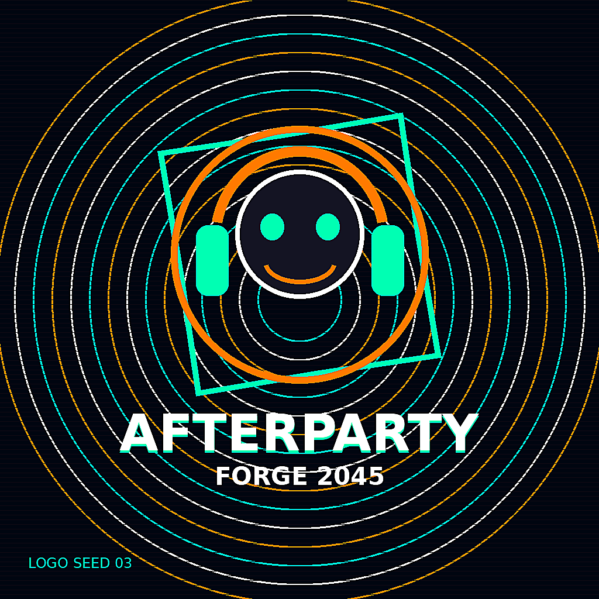
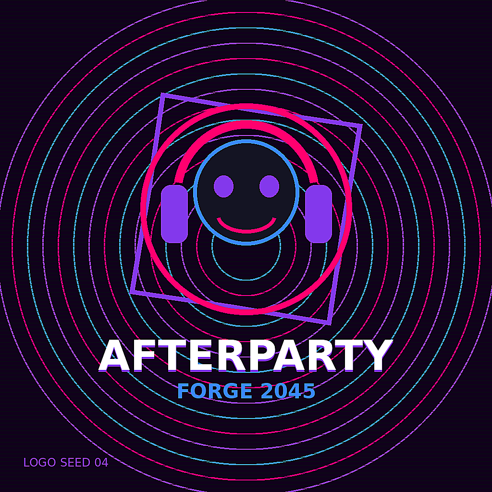
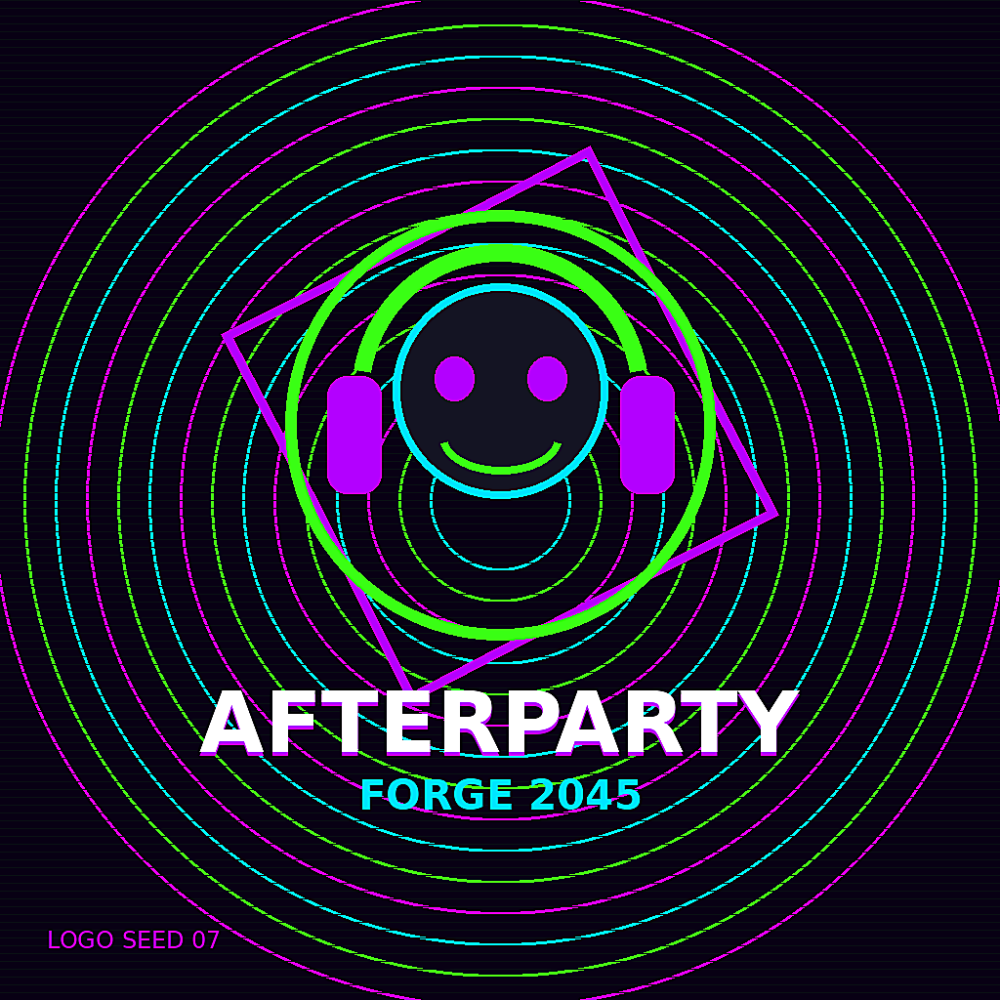
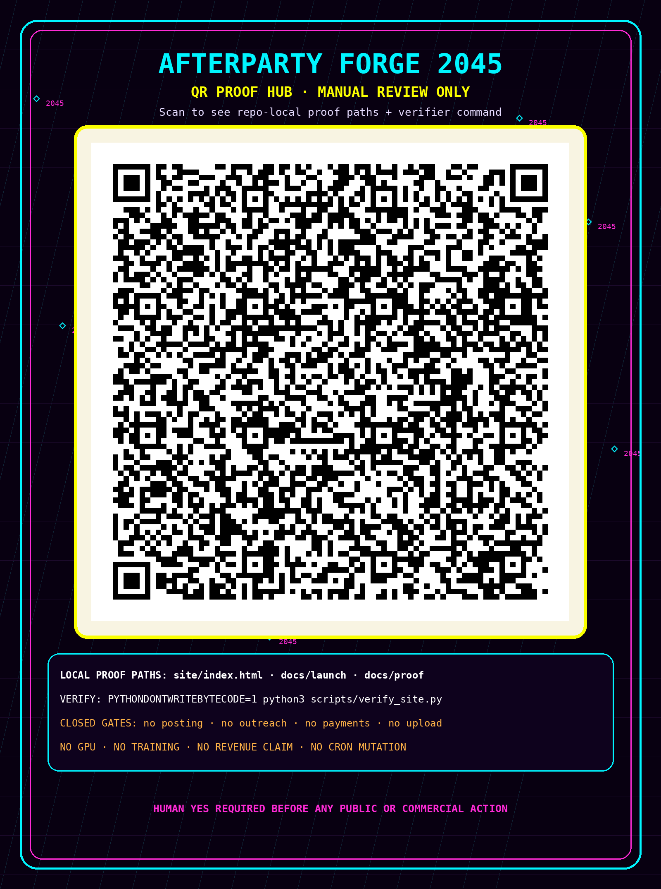

Logo seed 03
Logo seed 04
Logo seed 07Failed launch? Remix the signal. Build the entity, dataset, and payload pipeline.
python3 scripts/verify_entity_pipeline.py


Logo seed 03
Logo seed 04
Logo seed 07Afterparty Forge 2045 now includes Offer Builder, Launch Packager, Proof Ledger, Demo Router, Revenue Scout, Unicode Interface Director, Dataset Release Auditor, Buyer Proof FAQ Builder, Post-Demo Outcome Router, Scope Quote Sheet Builder, Private Demo Delivery Receipt Kit, Wake Operator Next Action Router, Private Follow-up Draft Builder, Manual Invoice Planning Checklist Builder, Handoff Integrity Auditor, and Evidence Snapshot Builder lanes. Money actions remain closed until human approval.
Three launch-safe X/Twitter draft threads are ready for awake review. No posting, scheduling, outreach, paid boost, checkout link, revenue claim, or affiliation claim is enabled.
Manual-upload-only captions, transcript, chapters, and Shorts hooks are staged for the proof trailer. Upload, posting, paid promotion, revenue claims, and affiliation claims remain closed until human approval.
A 60-second screen-share run sheet is staged for awake operator review. Manual run only: no Space, livestream, recording, public post, upload, outreach, payment link, GPU, training, model download, or cron mutation is enabled.
Private follow-up drafts, manual invoice planning, handoff integrity checks, and evidence snapshots are now visible for awake operator review only. They are draft-only/local planning artifacts: no sending, invoice creation, checkout/payment links, outreach, revenue claims, HF upload, token printing, GPU/training, model downloads, public posting, or cron mutation is enabled.
A 60/90-second buyer-safe private demo script is staged for awake operator review. Manual demo only: no outreach, public post, Space, livestream, recording, upload, payment link, invoice, revenue claim, affiliation claim, GPU, training, model download, or cron mutation is enabled.
A scannable QR proof-hub card is staged for manual review only. The QR payload points to repo-local proof paths and verifier commands; no posting, upload, outreach, payment link, revenue claim, GPU, training, model download, or cron mutation is enabled.

{kind=link}